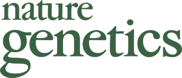

Prize & Supporters
Those who make this possible.
Prizes
The winners of each award will receive:
- a $500 prize.
- a free one-year electronic subscription to Nature Genetics.
- an article-processing charge waiver for an article in Scientific Data.
- a Gordon and Betty Moore Foundation Klean Kanteen and notebook.
Financial support for the award has been provided by: Nature Genetics, The Gordon and Betty Moore Foundation (via GBMF 4552 to CSG), and Casey Greene. Funding for operational support has been provided by the Laura and John Arnold Foundation.
Travel Support
Travel support is available to the recipient of the Junior Parasite award. Generous sponsorship from GigaScience and Scientific Data will allow us to cover the costs of economy airfare and hotel for the duration of the meeting. Support from GigaScience, Scientific Data, and Nature Genetics will allow us to cover the cost of registration for the Pacific Symposium on Biocomputing, where the award is announced.
GigaScience
GigaScience aims to revolutionize reproducibility of analyses, data dissemination, organization, understanding, and use through open access and open data publication of 'big data' studies across the life and biomedical sciences.

Nature Genetics
Nature Genetics publishes research that encompasses genetic and functional genomic studies. Current emphasis is on common and complex diseases and on the functional mechanism, architecture and evolution of gene networks.
Scientific Data
Scientific Data is an open-access journal for descriptions of scientifically valuable datasets from a broad range of research disciplines – helping make research data more available, citable, discoverable, interpretable, reusable and reproducible.
Administrative Support
Funding for the award is managed with administrative support from the University of Pennsylvania Perelman School of Medicine's Department of Systems Pharmacology and Translational Therapeutics. If you would like to team up with us to celebrate secondary data analysis with a one-year contribution (e.g. via a travel award), please send an e-mail to Casey Greene. If you would like to contribute to an endowment for the award, please send an e-mail to Casey Greene and cc Torren Blair.